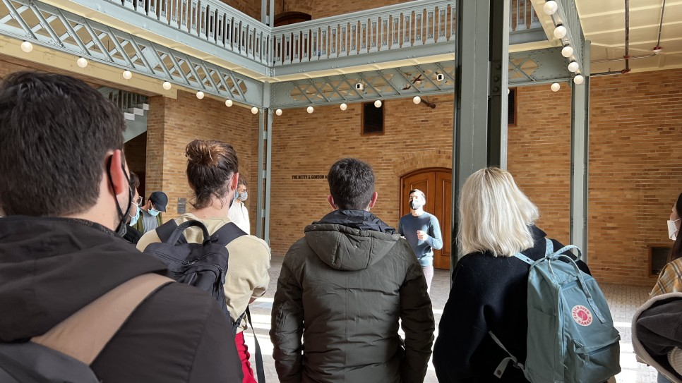

Events
오늘은 여기 UC Berkeley에 있기만 해도 참여할 수 있는 이벤트들, 그리고 SCET 학생으로서 참여했던 이벤트에 대한 이야기를 쭉 설명해보려고 한다.
직접적으로 학업과 연관있을 때도 있고 없을 때도 있었지만, 엄청난 사람들을 만날 수 있는 이벤트들도 있고, 워크샵 형태로 친해지거나 새로운 영역을 탐구하게 되는 기회가 되기도 한다. 아마 근데 나는 이런 이벤트들을 레버리지 잘 하는 타입도, 못 하는 타입도 아니고 그 중간에 있을거다.
SCET Workshop
SCET에서 진행하는 워크샵은 전부 SCET 프로그램을 듣는 학생들만을 대상으로 진행된다. 서로 얼굴 자주보고 워크샵을 통해 많이 배워가라는 뜻이 담긴 것 같았다. 전에는 스탠포드 vs 버클리 농구 티켓도 구해다 줬는데, 내가 그 날 요세미티를 가고 말았다.


SCET OT
일단 모든 이벤트는 OT부터 시작한다. 첫 글에서 OT 이야기는 길게 했으니 간단하게 다시 소개하자면, 행정적인 부분 설명하고 프로그램 소개하고 앞으로 이런 친구들과 친하게 지내게 될 것이라는 내용이었다. 이 때는 그냥 그렇구나 저렇구나 하는 친구들이었는데 진짜 한 학기 내내 어떻게든 계속 본다. 다들 친해져서 이제는 뭐 서로 농담따먹고 밥 먹고 술 먹고 그러는 사이.


SCET Workshop
가끔 학교 생활 열심히 하다보면 SCET에서 대뜸 캘린더 invitation이 날아온다. 참가 필수 적혀있고, 이런 테마인 워크샵이라고 학생들을 전부 부른다. 가면 Director 중 한 명인 Ken Singer가 주제 하나를 잡고 워크샵을 진행한다. 첫 워크샵은 리더쉽이라는 것이 무엇인지, 서로가 보는 세상이 얼마나 다르고 커뮤니케이션이 얼마나 어려운지 배우는 시간이었다.
이 때 서로 두 명씩 짝을 지어서 등지고 앉아서 그림을 보고 있는 사람은 그림을 설명하고, 그림을 못 보는 사람은 그 설명을 듣고 그림을 그리는 워크샵을 했다. 프랑스 친구랑 짝 지어서 서로 모국어도 아닌 영어로 끙끙 대면서 그림 그렸던 기억이 난다. (한국어로 한국인한테 설명했으면 아주 완벽하게 그렸을 텐데…)

그 때 그린 그림

SCET Workshop
두 번째 시간은 빵에 커피까지 준비되서 아주 든든하게 아침 먹으면서 했다. 이번 워크샵은 갈등에 대한 워크샵이었다. 갈등이 반드시 나쁘기만 한 것이냐부터 갈등을 어떻게 매니징 할 것인가를 배웠다. 워크샵용 게임도 알게 됐는데, 앞으로 써먹을 일이 있으면 좋겠다는 생각이 들었다.


워크샵 끝나고 다 같이 버클리 상징인 시계탑 올라갔었다.
SCET Events
굳이 SCET 학생이 아니어도, SCET 뉴스레터를 구독하고 있으면 이런 이벤트 저런 이벤트 있어요 하면서 간혹 소식지가 날아온다. 굳이 뉴스레터가 아니어도 홈페이지가 은근 보물창고라 이런 저런 글 뒤져보면 예전 강연들이라던가 Alumni 소식들을 확인 할 수 있다.

SCET office
SCET fellowship Challenge라고 주마다 미션이 나오고 포인트 얻어서 마지막에 celebration하는 이벤트도 진행하던데, 첫 주 참가하고 못 했다. 으쌰으쌰 같이 불타오를 친구가 있으면 잘 할 수 있었다는 변명과 함께 떠내려 보냈다.
Dean’s Speaker Series
https://haas.berkeley.edu/about/speaker-series/deans-speaker-series/
Berkeley의 경영대인 Haas에서 진행하는 Dean’s Speaker Series다. 처음에는 이런게 있는 줄 몰랐는데, 수강 중인 Haas course 교수님이 PayPal CEO가 온다면서 관심 있으면 참가해보라길래 바로 신청해서 참가해보니 학장 네이밍 붙어서 진행 중인 엄청난 이벤트였다. 덕분에 PayPal CEO 지근 거리에서 보고 끝나고 악수까지 했다는 신기한 경험.
아무튼 저 홈페이지에서 앞으로의 연사들과 일정을 확인할 수 있다. 저번 주에는 Beyond Meat CEO가 Zoom으로 참석했었다. (Haas 빌딩에 수도관이 터져서 홍수(…)가 나는 바람에 전부 virtual로 됐다. 한바탕 재밌었다 ㅋㅋ)


PayPal CEO
개인적으로 가장 기대되는 이벤트는 펩시의 CEO인 인드라 누이 CEO 세션이 가장 기대된다. 이민자 출신, 여성, 콜라 외에선 전부 코카콜라를 앞서가는 펩시를 만들어낸 전설적인 기업가인데, 직접 눈으로 보고 그 아우라를 느끼고 싶은 마음이다.
참고로 Dean’s Speaker Series와 비슷한 이벤트는 다른 학교에도 있다. USC Marshall에서 진행하는 이벤트도 참여했었다.

USC Marshall Dean’s Dialogue
International Student Service Events
https://www.eventbrite.com/o/berkeley-global-international-student-services-25317235729
https://www.eventbrite.com/o/berkeley-global-access-program-32531438107
Berkeley Global, International Student Service에서 학기 초에 집중적으로 주관하는 이벤트다. BGA 학생들을 대상으로 쭉쭉 공지가 먼저 나가는데, 나는 친구들이 전부 BGA 학생들이라 공지 받으면 같이 신청해서 참가하고 그랬다. 다양한 친구들 순식간에 많이 사귈 수 있다는 최고의 장점이 있는 이벤트다. 학기 초에는 이런 이벤트 부지런하게 나가야 친구들이 많이 생긴다.


Campus Scavenger Hunt
위에 보이는 미션지 같은 거 주고 이곳저곳 가서 사진찍어서 업로드하라고 그러신다. 상품은 student store gift card. 약소한데 은근 아무것도 모르는 상황에서 친구들이랑 저 종이 부여잡고 지도 뒤져가면서 여기저기 걸어다니면서 이런저런 이야기하면 시간 금방간다. 샌프란시스코 이벤트에서는 그 날 거의 10km를 걸었긴한데… 아무튼 그 친구들이랑 친해졌으니 됐다.


San Fransisco Scavenger Hunt
DECODE events
실리콘밸리를 기반으로 하고 있는 비영리 재단인 DECODE에서도 다양한 이벤트를 버클리와 스탠포드 학생들을 대상으로 제공한다. 역시나 뉴스레터를 구독하면 이벤트 안내를 받아볼 수 있다. 나는 DECODE 클래스 중 하나인 Decode Silicon Valley Startup Success를 수강하면서 DECODE의 엄청난 네트워크에서 섭외되는 엄청난 연사들의 speaking을 들을 기회를 받았다. MasterClass CEO, YC Partner 등 쟁쟁한 분들이 연사로 오셨거나 앞으로 올 예정이다. (개인적으로 Sendbird의 김동신 대표님이 연사로 섭외되었길래 너무 설레서 엄청 빡시게 준비했었는데, business meeting으로 취소됐다는 이야기를 듣고 조금 슬펐다.)

엄청 기대했는데! 다음 기회에 뵐 수 있으면 좋겠다.
Design Field Notes
https://jacobsinstitute.berkeley.edu/design-field-notes/
전에 짤막하게 언급하고 넘어갔었는데, Berkeley에서 진행하는 디자인 수업을 아예 공개 audit을 할 수 있게 오픈한 강의다. 매 주마다 디자인 관련 연사들 모셔서 이것저것 이야기 듣는 수업이다. 나는 디자인에 문외한이라 딱 한 번 참여해서 들어봤다.

관련은 없는데, Seattle Art Museum가서 찍은 거
Berkeley School of Information
https://www.ischool.berkeley.edu/events
정보 대학이라고 불러야 하나, 아무튼 여기도 뉴스레터 구독해두면 이런 이벤트 저런 이벤트 있다고 쭉쭉 날아오고, 이벤트 페이지에 가면 매주 이벤트가 있다. 아무래도 전공이랑 비슷하기도 하고, 이런저런거 들어봐서 소개한다.

관련은 없는데, Seattle Art Museum가서 찍은 거
이런 저런 이벤트 다니면서 느끼는 거지만, 결국은 중심이 잘 잡혀 있어야 저런 이벤트들도 제대로 써먹을 수 있다는 것. 기회가 홍수라 그냥 참가신청 눌려놓고 안 간 이벤트도 정말 많다. 모쪼록 여기 Bay Area 오시는 분들은 저보다 더 단단히 준비하셔서 많은 것들을 얻어가시길 바라며, 글을 마친다.